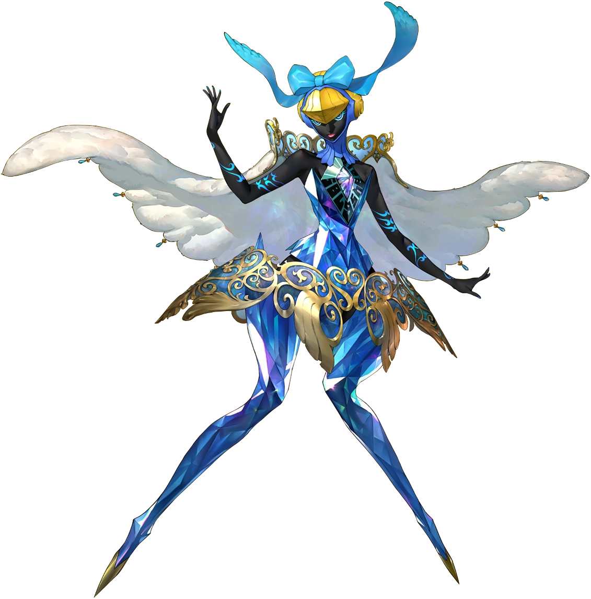
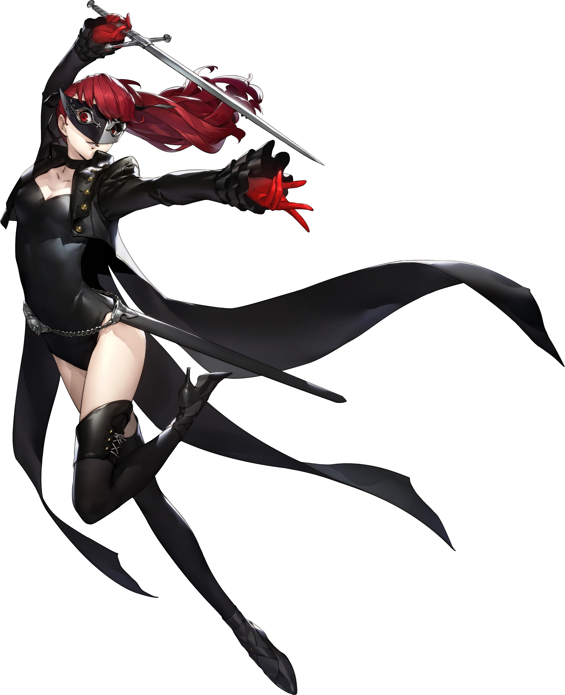

Introduction
Sumire is the tenth and final unlockable character in Persona 5 Royal. She is a talented gymnast who is in Shujin Academy She has guilt from her older sister as her older sister gave her life to save Sumire. For a lot of the game Sumire thinks she is her sister. Like Haru, Sumire has her persona but it is not fully developed.
Persona Unlocking
Sumire however fully unlocks her persona Cendrillon when she is ambushed by enemies and decides to stop being insecure and decides to be herself which allows her to fully unlock the use of her persona Cendrillon.
Gallery
Cendrillon
Violet(apperence in metaverse)
Sumire Yoshizawa
Facts about Sumire Yoshizawa
- Code Name: Violet
- DOB(date of birth): March 25, 2000
- Age: 16
- Height: 162 cm (5'4")
- Primary Tool: Rapiers
- Secondary Tool: Antique Rilfles
- Arcana(personality): Faith
- Persona(asssistant): Cendrillon